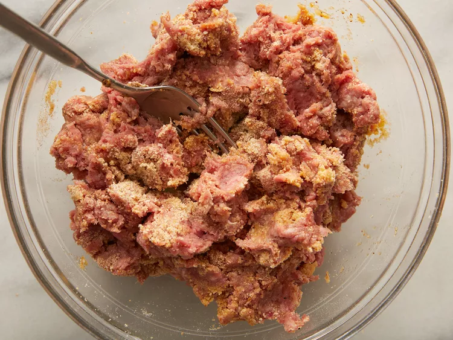
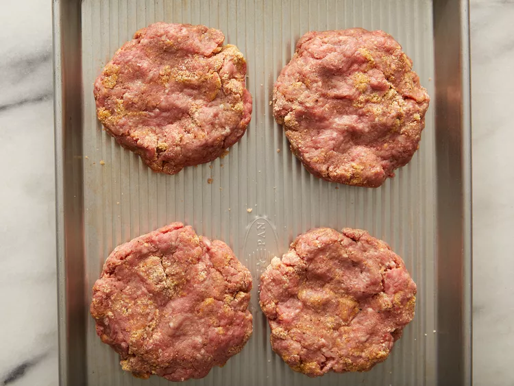
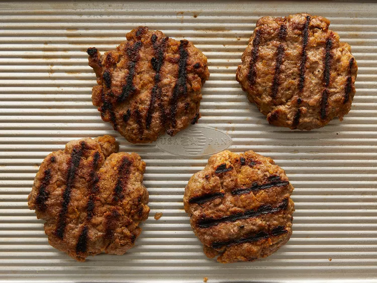

Cover and cook 6 to 8 minutes per side, or to desired doneness.
An instant-read thermometer inserted into the center should read at least 160 degrees F (70 degrees C).



This hamburger patty recipe uses ground beef and an easy bread crumb mixture. Nothing beats a simple hamburger on a warm summer evening! Enjoy on ciabatta, Kaiser, or potato rolls topped with your favorite condiments.


